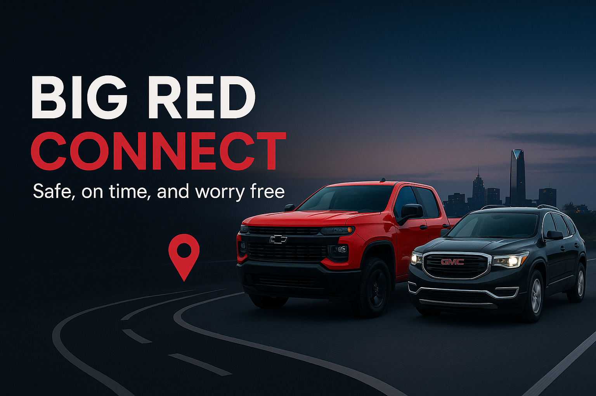

BIG RED CONNECT
Your Local Connection Across OKC — Owner Operated, Surge-Free, Trusted.
WHAT WE DO
- Work, meetings & appointments
- Shopping runs & errands
- Nights out across OKC venues
- Airport & Tinker AFB connections
- Event & nightlife link-ups
WHY BIG RED?
- Owner-operated: one trusted local connection
- No surge pricing or surprise fees
- Consistent, personal service
- Trusted by OKC venues & locals
- Flexible scheduling — simple communication
⭐⭐⭐⭐⭐
"Big Red keeps it easy, local, and reliable — no apps, no headaches."
— Samantha, OKC
⭐⭐⭐⭐⭐
"Always on time, always dependable — my go-to for work meetings."
— James, Moore
Big Red Connect is independently owned and operated in Oklahoma City. You work directly with one local professional for every connection — not a random app driver.
Local. Surge-Free. Trusted.